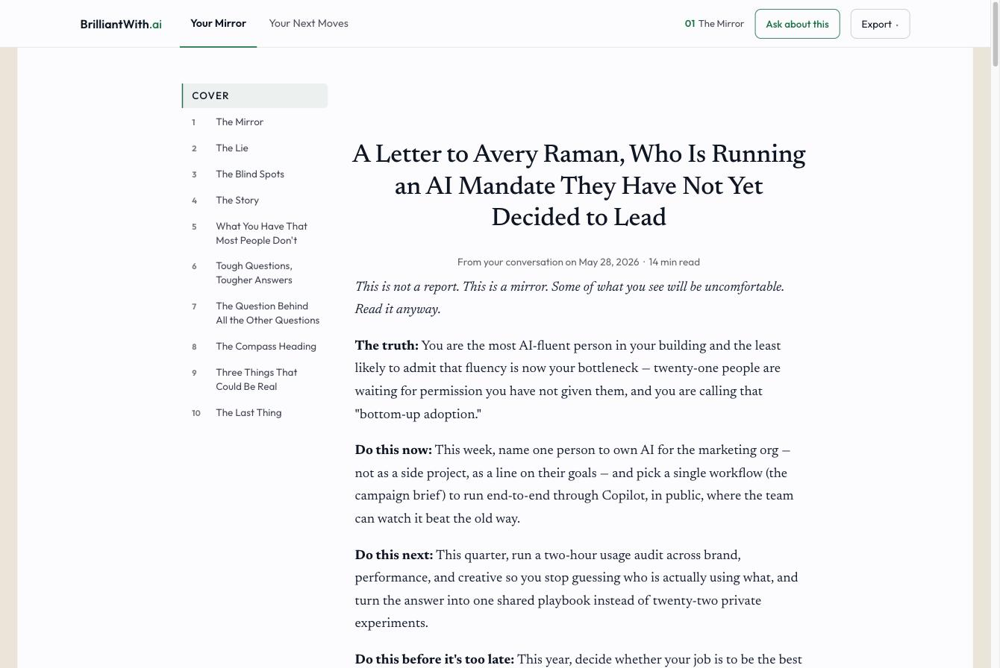
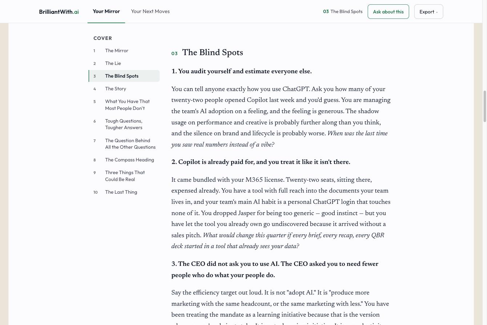
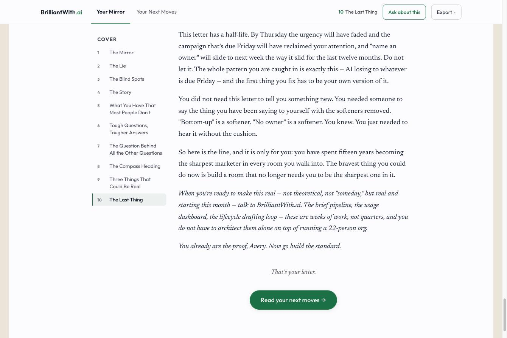
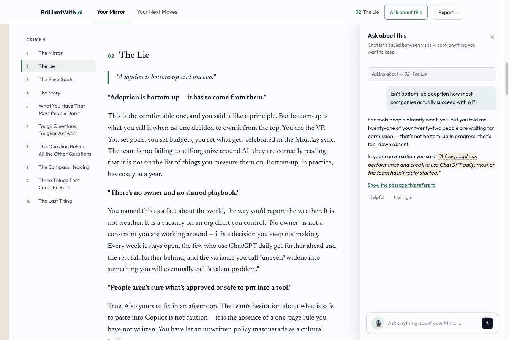
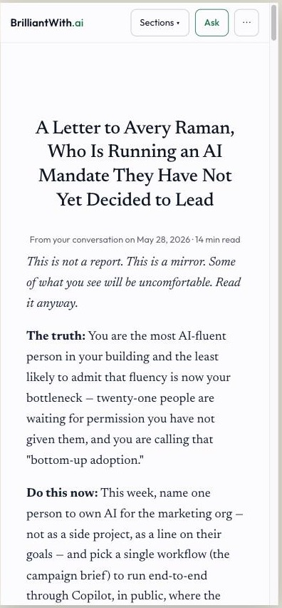
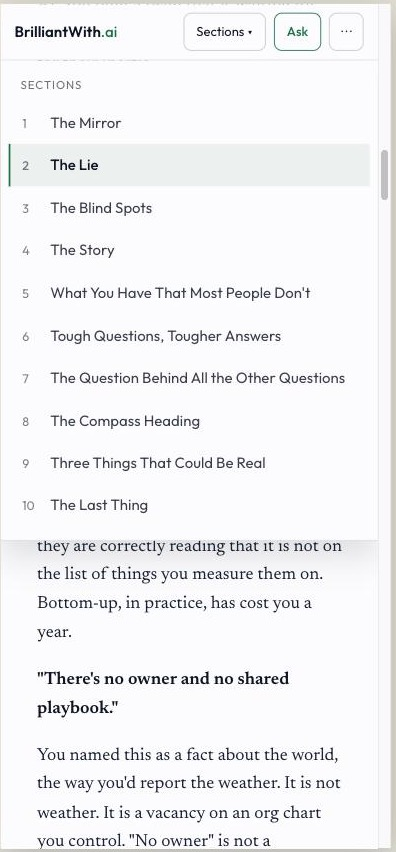
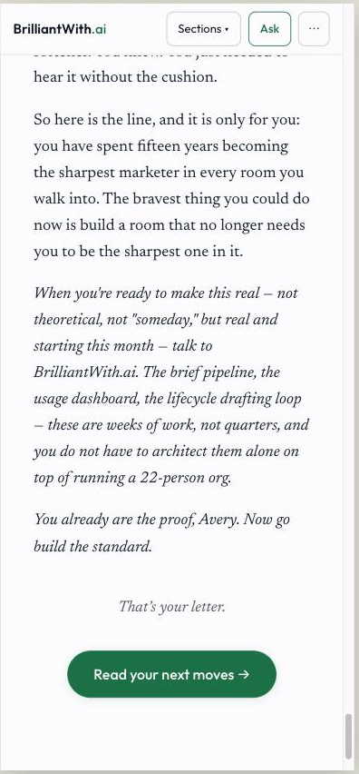

2026-08-05 — built as overrides on the real rendered product (mock data), not a standalone rebuild. Synthesis of the three design reviews: one sticky header, one vocabulary, exports once, all-serif letter, ~70ch measure, green states, quiet ending. Chat is off the B2C critical path — shot 4 is reference only.
Single 64px header (logo, tabs, section, Ask, Export). Hero removed; date + reading time under the title; letter starts in the first screen.

All-serif letter, ~70-character lines, navy section titles with small green numbers, TOC active state (green bar + tint), darker TOC text.

Quiet close: “That’s your letter.”, one green button — “Read your next moves →”. No ticks, no duplicate export row.

Descoped from launch. Reference for the follow-up: side drawer keeps reading position, cites interview evidence, feedback controls, plain “not saved” notice (superseded — chat will resume via its task ID).

Compact header: logo, Sections, Ask, overflow. Full-width letter.

Sections opens from the header anywhere in the letter; green active state; closes on jump.

Same quiet close as desktop.
